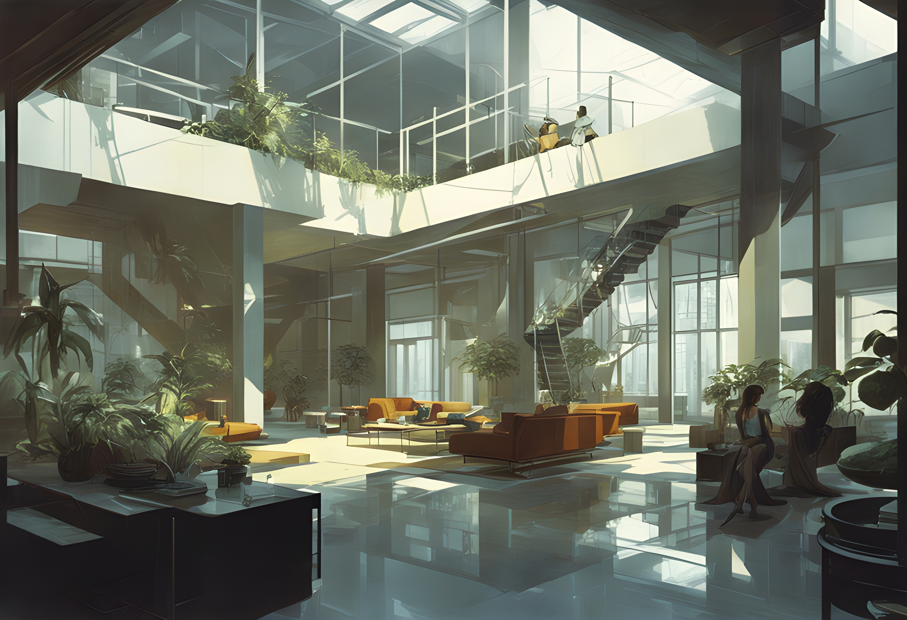
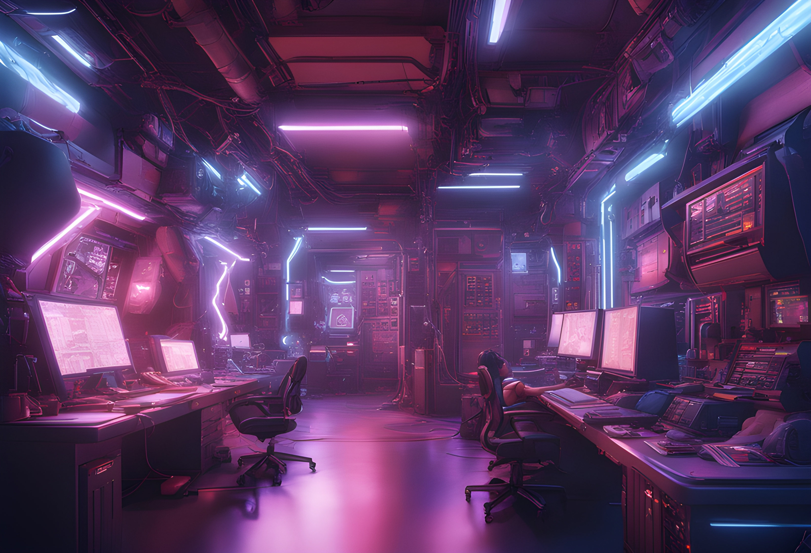

Povijest TeleRecenzije i TeleProdaje
Povijest TeleRecenzije i TeleProdaje
TeleRecenzija je nastao kao odgovor na potražnju za kvalitetnom recenzijom mobilnih uređaja prilagođenom balkanskom tržištu koji je prepun tehnološki zaostalim korisnicima. Davanjem informacija o karakteristikama i iskustva korištenja mobilnih uređaja nastojimo potencijalnim kupcima pomoći prosuditi isplati li im se bacati krvavo zarađeni novac na željeni uređaj.
Prije 8 godina TeleRecenzija je izgrađena iz strasti prema tehnologiji i uvjerenja da ona može zakomplicirati naše živote. U proteklom desetljeću tehnologija je već ispunila i nadmašila neke od naših najluđih snova i očekivanja, a TeleRecenzija je bila tu da predvidi, analizira i kritizira u svakom koraku.
TeleRecenziju je 2015 osnovao Jasmin Jasminović kao hobi koji je kasnije prerastao u tvrtku. Danas broji čak 2 (slovima: dva) zaposlenika, a uz malo sreće bit će i troje. TeleRecenzija je jako brzo rastao u popularnosti te je danas jedan od najposjećenijih stranica za recenzije u regionu.
No s porastom posjećenosti naše stranice, porastao je i naš apetit za većom zaradom. Stoga TeleRecenzija 2019. godine osniva i službenu stranicu za prodaju mobilnih uređaja - TeleProdaju! Tako sada korisnici mogu na istome mjestu vidjeti recenziju uređaja te odmah ga i kupiti.
Misija TeleRecenzije i TeleProdaje
Misija TeleRecenzije i TeleProdaje je voditi ljude kroz komplicirani i zbunjujući svijet mobilne tehnologije te im omogućiti da i osobno sudjeluju i budu dio njega.
Davanjem informacija o karakteristikama i iskustva korištenja mobilnih uređaja potencijalnim kupcima pomažemo prosuditi isplati li im se bacati krvavo zarađeni novac na željeni uređaj. Ukoliko se kupac odluči za kupovinu uređaja na temelju naših saznanja o njima, smatramo da smo ispunili svoj posao. Ukoliko se kupac odluči na odgodu kupovine jer mu se recenzija smartphonea nije svidjela, također smo ispunili svoju dužnost.
Danas je TeleRecenzija jedan od vodećih recenzista mobilne tehnologije s publikom od preko milijun balkanaca mjesečno. Naš tim se sastoji od čak dva zaposlenika. Ulažemo srce i žuljeve u stvaranje detaljnih recenzija, jeftinih videozapisa, skupe webshop trgovine i korisnih alata s jednom svrhom - informirati, naplatiti i posvađati se s našom publikom nezainteresiranih i izgubljenih čitatelja tehnologije.
 Članovi TeleRecenzije
Članovi TeleRecenzije

- Direktor g. Jasmin Jasminović
- Pomoćni radnik g. Aldin Aldinović
Ukoliko želite postati punokrvnim članom našeg teama, pošaljite svoj zahtjev, CV, molbu, zamolbu, povijest bolesti i platnu listu na naš email.